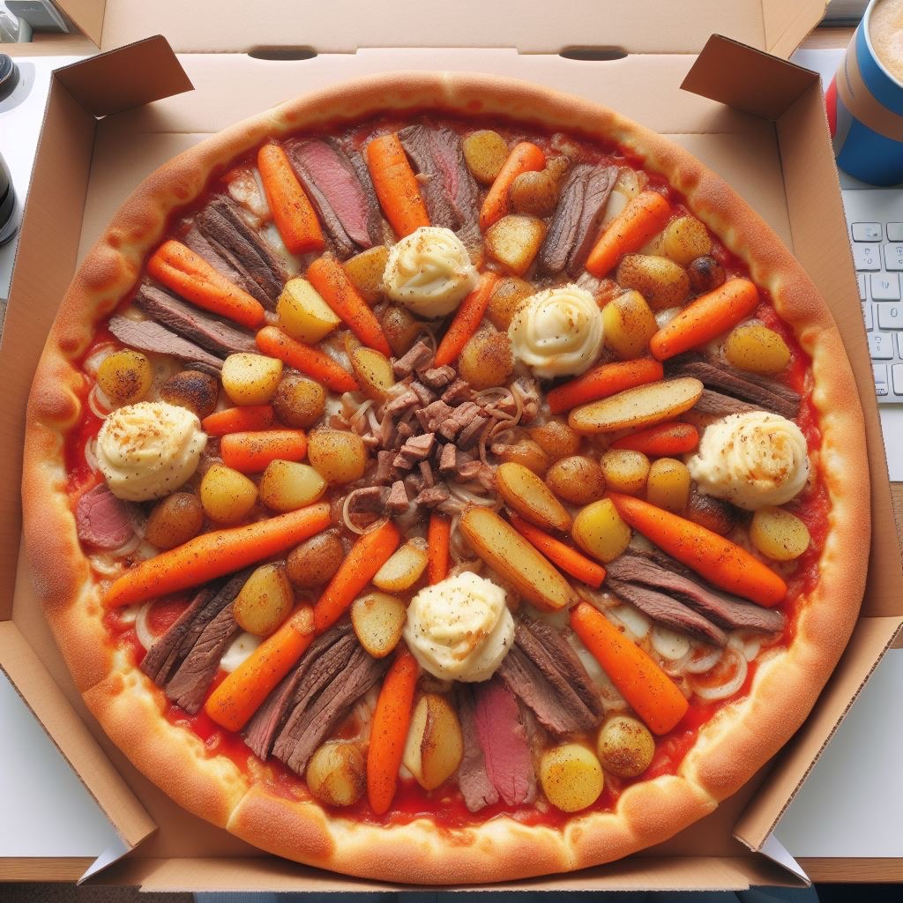

Roast Dinner Pizza

The Best of England and Italy in One Dish
For centuries, world class chefs have been coming up with a new recipe that can surely please the entire planets population. Introducing the Roast Dinner Pizza, a fun and hearty meal that will leave your stomach full but your tastebuds wanting a whole hell of a a lot more!
Ingredients
- 1 pre-made pizza crust
- 1 bowl of leftover roast chicken or turkey
- 1 cup leftover mashed potatoes
- 1/2 cup gravy
- 1 cup shredded mozzarella cheese
- fresh herbs for garnish
Instructions
- Preheat your oven according to the pizza crust package instructions. If your oven has a British accent, even better.
- Place your pre-made pizza crust on a baking sheet or pizza stone.
- Spread a generous layer of mashed potatoes on the pizza crust. Think of it as the comforting hug your pizza needs.
- Sprinkle the shredded roast chicken or turkey over the mashed potatoes. This is where Italian and British flavors collide in a beautiful mess.
- Scatter your leftover roasted vegetables on top of the meat layer. The more colorful, the merrier. Embrace the chaos!
- Drizzle gravy over the entire pizza. Don't hold back; we're going for that "gravy river flowing through a flavor landscape" vibe.
- Sprinkle mozzarella cheese generously over everything. It's the glue that holds this culinary adventure together.
- Bake the Roast Dinner Pizza in the preheated oven until the cheese is melted and bubbly, and the crust is golden brown. This should take about 10-15 minutes, or until you start smelling delicious confusion.
- Remove the pizza from the oven and let it cool slightly. Garnish with fresh herbs for a touch of sophistication amidst the madness.
- Slice your Roast Dinner Pizza and serve. Cheers mate!